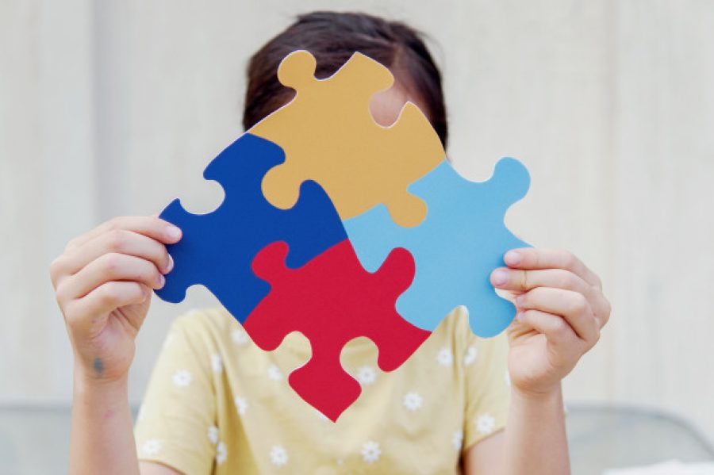

EVALUACIONES
El Desarrollo físico, cognitivo, emocional y social del niño en comparación con las etapas típicas de desarrollo para su edad.
Del coeficiente intelectual (CI): Mide la capacidad intelectual del niño y su potencial de aprendizaje.
Del Comportamiento para identificar problemas de comportamiento, hiperactividad, dificultades de atención y conductas desafiantes.
Habilidades académicas: Evalúa el rendimiento académico y la comprensión del niño en áreas como lectura, escritura y matemáticas.
Emocional: Examinar la expresión emocional del niño, su capacidad para manejar el estrés y las situaciones emocionalmente cargadas.

EVALUACIONES
Social enfocada en las habilidades sociales, sus relaciones con sus compañeros y cómo interactúa con los demás.
Explorando los rasgos de personalidad del niño y cómo estos pueden influir en su comportamiento y adaptación.
Evaluación para detectar el espectro autista y evaluar el nivel de funcionamiento social y comunicativo del niño.
Evaluación del TDAH (Trastorno por Déficit de Atención e Hiperactividad) y cómo abordarlos adecuadamente.
Evaluación psicodiagnóstica, que combina varias pruebas y técnicas para obtener una visión holística del niño y sus necesidades.